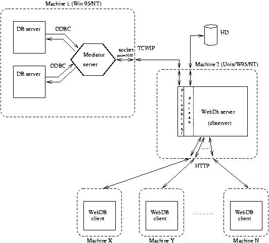

Author(s): I. Caballero, D. Cabeza, J.M. Gómez, and M. Hermenegildo, clip@dia.fi.upm.es, http://www.clip.dia.fi.upm.es/, The CLIP Group, Facultad de Informática, Universidad Politécnica de Madrid.
Version: 1.5#1 (1999/11/29, 17:12:34 MET)
Version of last change: 0.9#35 (1999/4/6, 13:52:16 MEST)
The purpose of this library is to implement an instance of the generic concept of
persistent predicates, where external
relational databases are used for storage (see the documentation of the
persdb library and [CHGT98,Par97] for details). To this end, this library exports SQL persistent versions of the
assertz_fact/1,
retract_fact/1 and
retractall_fact/1 builtin predicates. Persistent predicates also allow
concurrent updates from several programs, since each update is atomic.
The notion of persistence provides a very natural and transparent way to access database relations from a Prolog program. Stub definitions are provided for such predicates which access the database when the predicate is called (using the
db_client library). A
Prolog to SQL translator is used to generate the required
SQL code dynamically (see library
pl2sql).
This library also provides facilities for reflecting more complex views of the database relations as Prolog predicates. Such views can be constructed as conjunctions, disjunctions, projections, etc. of database relations. Also, SQL-like aggregation operations are supported.
The architecture of the low-level implementation of the database interface was defined with two goals in mind:
In order to allow the flexibility mentioned above, a client-sever architecture was chosen. The following figure depicts the overall architecture of the system:

At the server side, a "database mediator server" connects on one side to the databases using the ODBC interface (this interface is available for the databases of the RadioWeb project, as well as for the majority of the databases running in the Win95/NT operating systems) and on the other it is connected to the network by TCP/IP using a fixed socket number / service (currently fixed to socket number 2020).
The mediator server must run on the Windows (NT/95) operating system, on the machine where the databases are also running. The (Prolog) clients which connect to it can be run locally at the server machine. In addition, remote clients running on different machines can also connect to the mediator server by connecting to its socket number (service). Such clients can run on either Unix or Windows systems.
After the connection is established a client can send commands to the mediator server which will pass them to the corresponding database server, and then the data will traverse in the opposite direction. These messages include logging on and off from the database, sending SQL queries, and receiving the responses.
The low level implementation of the current library is accomplished by providing several abstraction levels over the socket interface library of the Prolog engine. These layers of abstraction implement the persistent predicate view, build the appropriate commands for the database using a translator of Prolog goals to SQL commands, issue such commands using the mediator send/receive procedures, parse the responses, and present such responses to the Prolog engine via backtracking.
:- include(library('persdb_sql/persdb_sql')).
:- use_module(library(format)).
%% ------------------------------------------------- %%
%% First sample database : 'SA 6.0 Sample' %%
%% ------------------------------------------------- %%
%% Declare product/4 a persistent predicate, storage in 'radiowebdb':
:- sql_persistent(product( int, int, string, string ),
product( quantity, id, name, size ),
sampledb).
sql_persistent_location(sampledb, %% The 'sampledb' descriptor:
db('ASA 6.0 Sample','dba', 'sql','r2d5.dia.fi.upm.es':2020)).
main0 :-
%% Prints the contents of the relation 'product/4' by backtracking over it:
format("Printing table:\n",[]),
product(Quantity, Id, Name, Size),
format("Tuple: ~w \t ~w \t ~w \t ~w \n",
[Quantity, Id, Name, Size]),
fail.
main0 :-
format("Done.\n",[]).
%% Generalizing table printing:
%% Prints the contents of Pred by backtracking over it
print_predicate(Pred):-
format("Printing relation:\n",[]),
Pred, %% predicate call
Pred=..[_|Args],
format("\t Tuple: ~w \n",[Args]),
fail.
print_predicate(_Pred):-
format("Done.~n",[]).
main1 :- %% similar to main0:
%% Prints the contents of the relation 'product/4' by backtracking over it:
print_predicate(product(_Quantity,_Id,_Name,_Size)).
main2 :- %% Issues a complex query inside a db_findall:
dbfindall(sampledb,
foo(Quantity, Id, Name, Size, Bar),
( product(Quantity, Id, Name, Size),
I^N^S^(Bar is avg(Q,product(Q, I, N, S)))
),
Results),
format("Results = ~w~n",[Results]).
main21 :- %% Using db_call
dbcall(sampledb,
(product(Quantity, Id, Name, Size),
product(Quantity, Id1, _Name1, _Size1),Id1>Id)),
%% product(Quantity, Id, Name, Size),
%% product(Quantity, Id1, Name1, Size1),
%% Id1>Id,
format("Tuple: ~w \t ~w \t ~w \t ~w \n",
[Quantity, Id, Name, Size]).
main22 :- % get the set of tables from a database
sql_get_tables(sampledb,TablesList),
display(TablesList).
main23 :- % get table attributes and its types
sql_table_types(sampledb, 'Customer', AttList),
display(AttList).
%% ------------------------------------------------- %%
%% Second sample database : 'Literature' %%
%% ------------------------------------------------- %%
:- sql_persistent(authors(string,string,int),
authors(firstName,lastName,id), %% 'id' is the primary key
literature_db).
sql_persistent_location(literature_db,
db('Literature','dba','sql','r2d5.dia.fi.upm.es':2020)).
main3:- %% Prints the contents of authors
print_predicate(authors(_FirstName,_LastName,_Id)) .
main4:- %% assert a persistent fact
dbassertz_fact(authors('Pedro','Calderon de la Barca',17)).
main6:- %% retract a persistent fact
dbretract_fact(authors('Pedro','Calderon de la Barca',17)).
main9:- %% checking if a persistent fact is a current fact
dbcurrent_fact(authors(_X,_Y,_Z)).
persdbrtsql)use_package/1 declaration:
:- module(bar, [main/1], [persdb_sql]).or
:- module(bar, [main/1]).
:- include(library(persdb_sql)).
:- use_package([persdb_sql]).or
:- include(library(persdb_sql)).
persdbtr_sql.pl and persdbrt_sql.pl) and includes some needed declarations.
persdbrtsql)Usage:
No further documentation available for this predicate.
The predicate is of type implicit.
Usage: dbassertz_fact(+Fact)
assertz_fact/1: the current instance of Fact is interpreted as a fact (i.e., a relation tuple) and is added to the end of the definition of the corresponding predicate. If any integrity constraint violation is done (database stored predicates), an error will be displayed. The predicate concerned must be statically (
sql_persistent/3) or dinamically (
make_sql_persistent/3) declared. Any uninstantiated variables in the Fact will be replaced by new, private variables. Note: assertion of facts with uninstantiated variables not implemented at this time.
+Fact is a fact (a term whose main functor is not ':-'/2).
(persdbrtsql:fact/1)
The predicate is of type implicit.
Usage: dbretract_fact(+Fact)
retract_fact/1: deletes on backtracking all the facts which unify with Fact. The predicate concerned must be statically (
sql_persistent/3) or dinamically (
make_sql_persistent/3) declared.
+Fact is a fact (a term whose main functor is not ':-'/2).
(persdbrtsql:fact/1)
The predicate is of type implicit.
Usage: dbcurrent_fact(+Fact)
current_fact/1: the fact Fact exists in the current database. The predicate concerned must be declared
sql_persistent/3. Provides on backtracking all the facts (tuples) which unify with Fact.
+Fact is a fact (a term whose main functor is not ':-'/2).
(persdbrtsql:fact/1)
The predicate is of type implicit.
Usage: dbretractall_fact(+Fact)
retractall_fact/1: when called deletes all the facts which unify with Fact. The predicate concerned must be statically (
sql_persistent/3) or dinamically (
make_sql_persistent/3) declared.
+Fact is a fact (a term whose main functor is not ':-'/2).
(persdbrtsql:fact/1)
Meta-predicate of type implicit with arguments: make_sql_persistent(addmodule,?,?).
Usage: make_sql_persistent(PrologPredTypes,TableAttributes,Keyword)
sql_persistent/3 declaration.
PrologPredTypes is a structure describing a Prolog predicate name with its types.
(persdbrtsql:prologPredTypes/1)
TableAttributes is a structure describing a table name and some attributes.
(persdbrtsql:tableAttributes/1)
Keyword is the name of a persistent storage location.
(persdbrtsql:persLocId/1)
Usage: dbfindall(+DBId,+Pattern,+ComplexGoal,-(Results))
findall/3, but Goal is executed in database DBId. Certain restrictions and extensions apply to both Pattern and ComplexGoal stemming from the Prolog to SQL translation involved (see the corresponding type definitions for details).
+DBId a unique identifier of a database session connection.
(db_client:dbconnection/1)
+Pattern is a database projection term.
(pl2sql:projterm/1)
+ComplexGoal is a database query goal.
(pl2sql:querybody/1)
-(Results) is a list.
(basic_props:list/1)
Usage: dbcall(+DBId,+ComplexGoal)
ComplexGoal to database DBId for evaluation. ComplexGoal must be a call to a persistent predicate which resides in database DBId.
+DBId a unique identifier of a database session connection.
(db_client:dbconnection/1)
+ComplexGoal is a database query goal.
(pl2sql:querybody/1)
Usage: sql_query(+DBId,+SQLString,AnswerTableTerm)
ResultTerm is the response from database DBId to the
SQL query in SQLString to database DBId. AnswerTableTerm can express a set of tuples, an error answer or a 'ok' response (see
answertableterm/1 for details). At the moment,
sql_query/3 log in and out for each query. This should be changed to log in only the first time and log out on exit and/or via a timer in the standard way.
+DBId a unique identifier of a database session connection.
(db_client:dbconnection/1)
+SQLString is a string containing SQL code.
(pl2sql:sqlstring/1)
AnswerTableTerm is a response from the ODBC database interface.
(db_client:answertableterm/1)
Usage 1: sql_get_tables(+Location,-(Tables))
Tables contains the tables available in Location.
persdbrtsql:persLocation(+Location)
(persdbrtsql:persLocation/1)
-(Tables) is a list of atms.
(basic_props:list/2)
Usage 2: sql_get_tables(+DbConnection,-(Tables))
Tables contains the tables available in DbConnection.
+DbConnection a unique identifier of a database session connection.
(db_client:dbconnection/1)
-(Tables) is a list of atms.
(basic_props:list/2)
Usage 1: sql_table_types(+Location,+Table,-(AttrTypes))
AttrTypes are the attributes and types of Table in Location.
persdbrtsql:persLocation(+Location)
(persdbrtsql:persLocation/1)
+Table is an atom.
(basic_props:atm/1)
-(AttrTypes) is a list.
(basic_props:list/1)
Usage 2: sql_table_types(+DbConnection,+Table,-(AttrTypes))
AttrTypes are the attributes and types of Table in DbConnection.
+DbConnection a unique identifier of a database session connection.
(db_client:dbconnection/1)
+Table is an atom.
(basic_props:atm/1)
-(AttrTypes) is a list.
(basic_props:list/1)
Usage: socketname(IPP)
IPP is a structure describing a complete TCP/IP port address.
basic_props:regtype/1)
Usage: dbname(DBId)
DBId is the identifier of an ODBC database.
basic_props:regtype/1)
Usage: user(User)
User is a user name in the ODBC database.
basic_props:regtype/1)
Usage: passwd(Passwd)
Passwd is the password for the user name in the ODBC database.
basic_props:regtype/1)
Usage: projterm(DBProjTerm)
DBProjTerm is a database projection term.
basic_props:regtype/1)
Usage: querybody(DBGoal)
DBGoal is a database query goal.
basic_props:regtype/1)
Imported from
sqltypes (see the corresponding documentation for details).
persdbrtsql)
Relates names of locations (the Keywords) with descriptions of such locations (Locations).
The predicate is multifile and of type data.
Usage 1: sql_persistent_location(Keyword,Location)
Keyword is an identifier for the persistent data location Location.
Keyword is the name of a persistent storage location.
(persdbrtsql:persLocId/1)
persdbrtsql:persLocation(Location)
(persdbrtsql:persLocation/1)
Usage 2: sql_persistent_location(Keyword,DBLocation)
DBLocation is a relational database, in which case the predicate is stored as tuples in the database.
Keyword is the name of a persistent storage location.
(persdbrtsql:persLocId/1)
DBLocation is a structure describing a database.
(persdbrtsql:database_desc/1)
persdbrtsql)
Usage: db_query(+DBId,+ProjTerm,+Goal,ResultTerm)
ResultTerm contains all the
tuples which are the response from database DBId to the Prolog query Goal, projected onto ProjTerm. Uses
pl2sqlstring/3 for the
Prolog to SQL translation and
sql_query/3 for posing the actual query.
+DBId a unique identifier of a database session connection.
(db_client:dbconnection/1)
+ProjTerm is a database projection term.
(pl2sql:projterm/1)
+Goal is a database query goal.
(pl2sql:querybody/1)
ResultTerm is a tuple of values from the ODBC database interface.
(db_client:tuple/1)
Usage: db_query_one_tuple(+DBId,+ProjTerm,+Goal,ResultTerm)
ResultTerm is one of the
tuples which are the response from database DBId to the Prolog query Goal, projected onto ProjTerm. Uses
pl2sqlstring/3 for the
Prolog to SQL translation and
sql_query_one_tuple/3 for posing the actual query. After last tuple has been reached, a null tuple is unified with ResultTerm, and the connection to the database finishes.
+DBId a unique identifier of a database session connection.
(db_client:dbconnection/1)
+ProjTerm is a database projection term.
(pl2sql:projterm/1)
+Goal is a database query goal.
(pl2sql:querybody/1)
ResultTerm is a predicate containing a tuple.
(db_client:answertupleterm/1)
Usage: sql_query_one_tuple(+DBId,+SQLString,ResultTuple)
ResultTuple contains an element from the set of tuples which represents the response in DBId to the
SQL query SQLString. If the connection is kept, succesive calls return consecutive tuples, until the last tuple is reached. Then a null tuple is unified with ResultTuple and the connection is finished (calls to
db_logoff/1 and
odbc_disconnect/1).
+DBId a unique identifier of a database session connection.
(db_client:dbconnection/1)
+SQLString is a string containing SQL code.
(pl2sql:sqlstring/1)
ResultTuple is a tuple of values from the ODBC database interface.
(db_client:tuple/1)
Usage: dbconnection(H)
H a unique identifier of a database session connection.
basic_props:regtype/1)
Usage: tuple(T)
T is a tuple of values from the ODBC database interface.
basic_props:regtype/1)
persdbrtsql)Go to the first, previous, next, last section, table of contents.